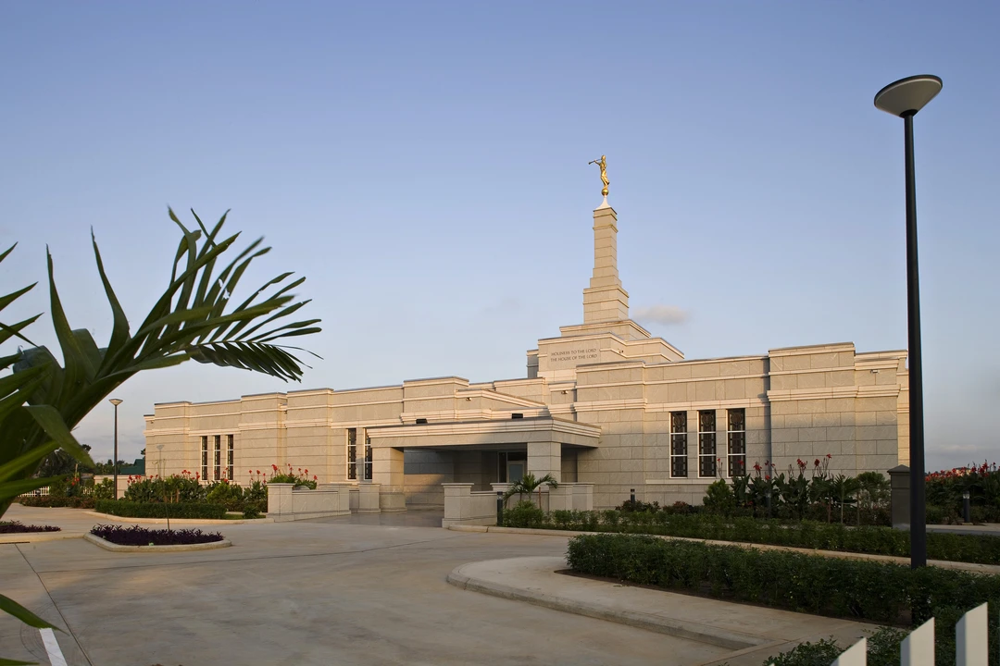
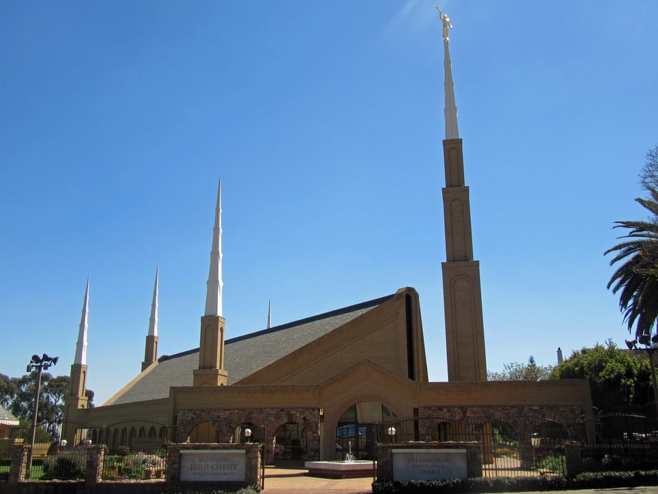
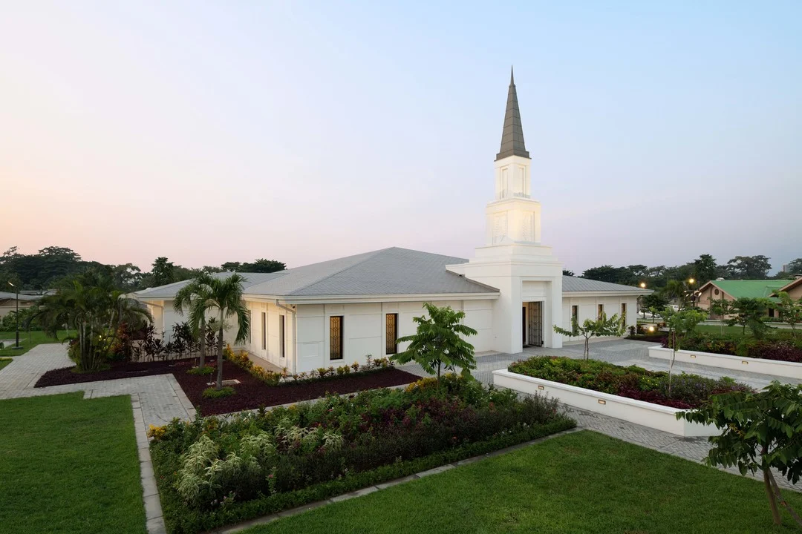
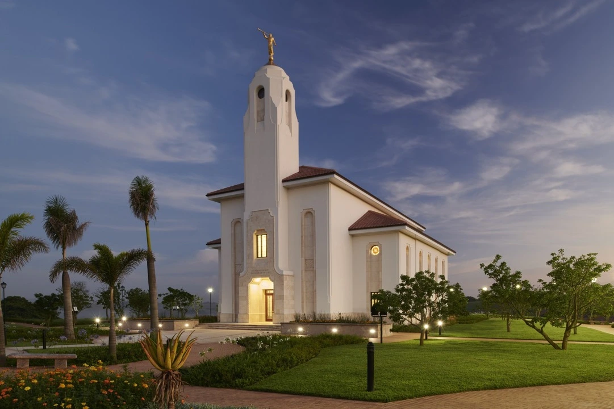
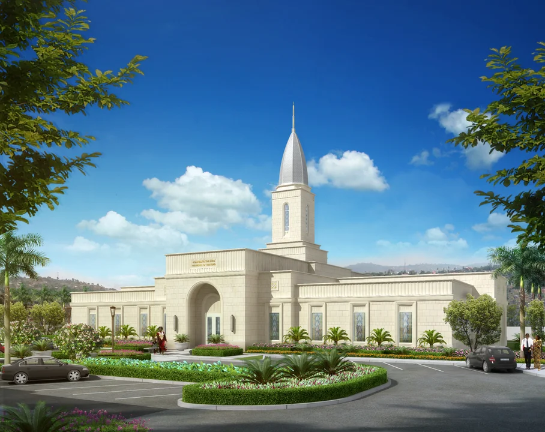

Temple Album
☰
Home
Old
New
Large
Small
African Temple Album
Accra Ghana Temple

Aba Nigeria Temple

Johannesburg South Africa Temple

Kinshasa DRC Temple

Durban South Africa Temple
Abidjan Ivory Coast Temple
Lagos Nigeria Temple
Nairobi Kenya Temple

Beira Mozambique Temple